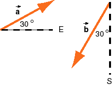

Hint: The diagram shows the given displacements. Make a drawing, roughly to scale, showing the x and y components of the two displacements.
Calculate the scalar components using the appropriate trigonometric functions. Then add the x components and add the y components to get the components of the resultant.